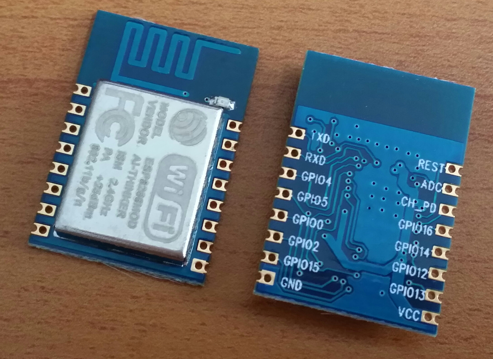
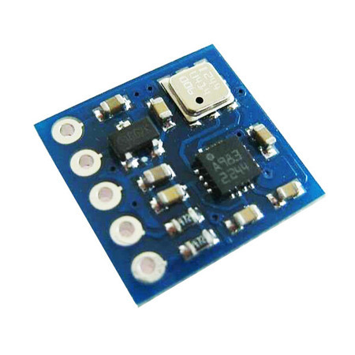
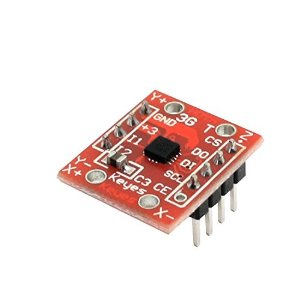
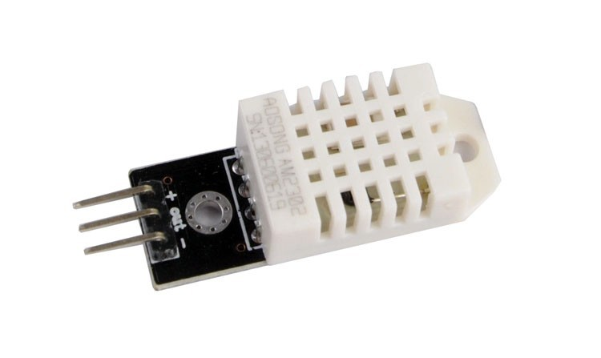
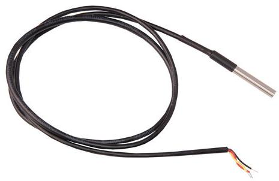
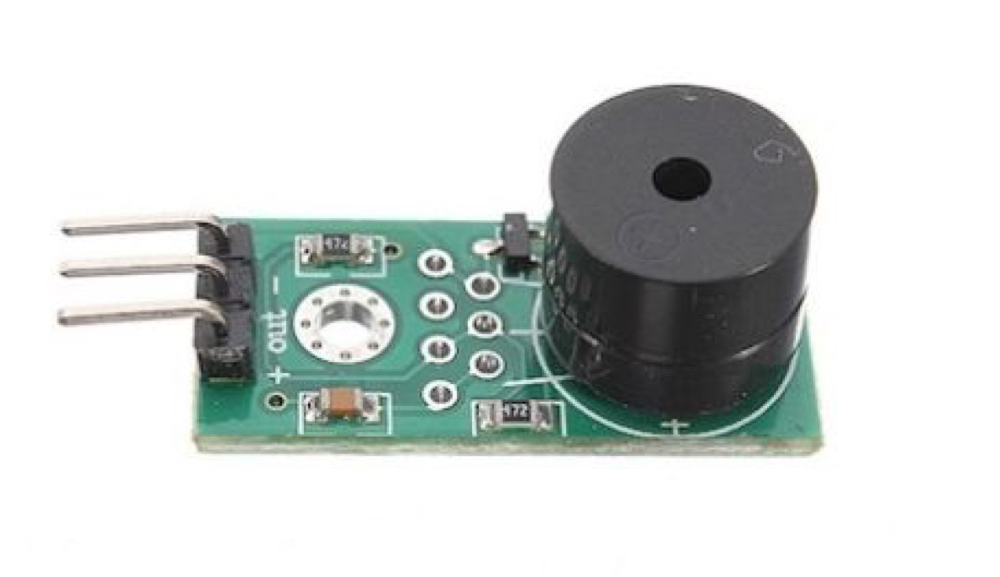
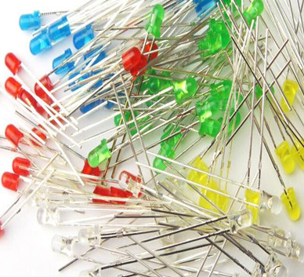
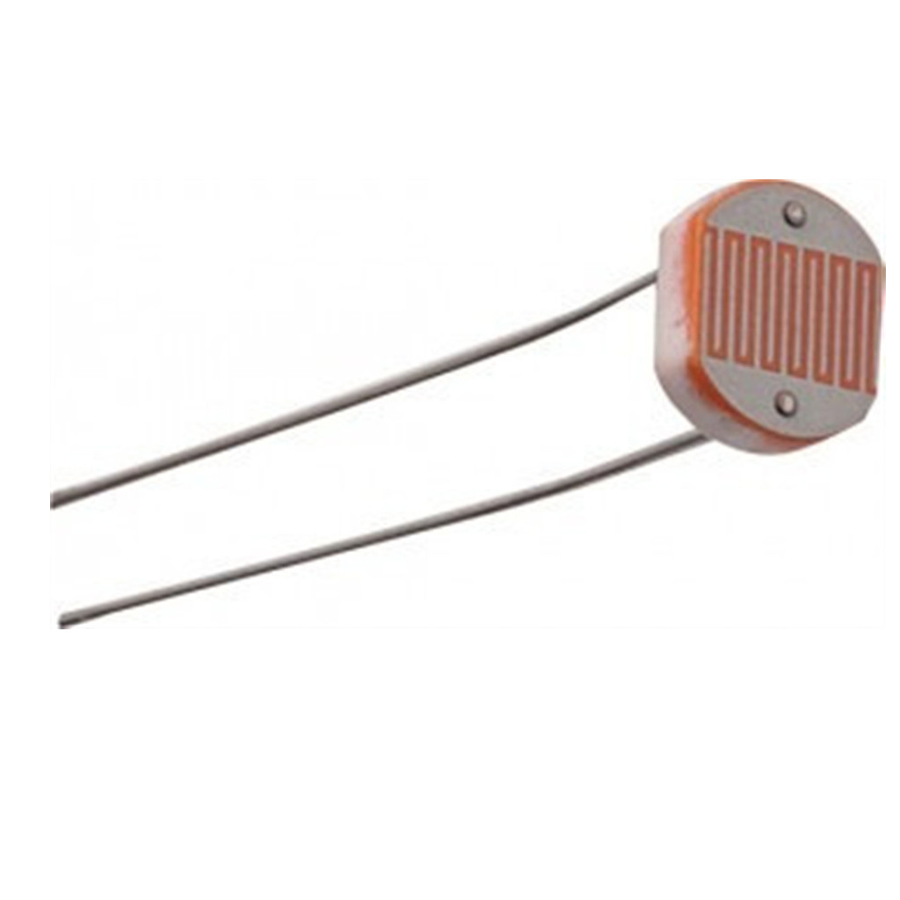
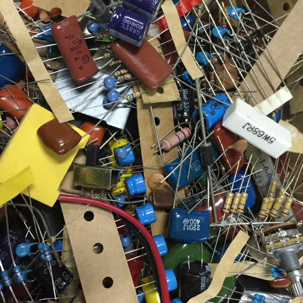
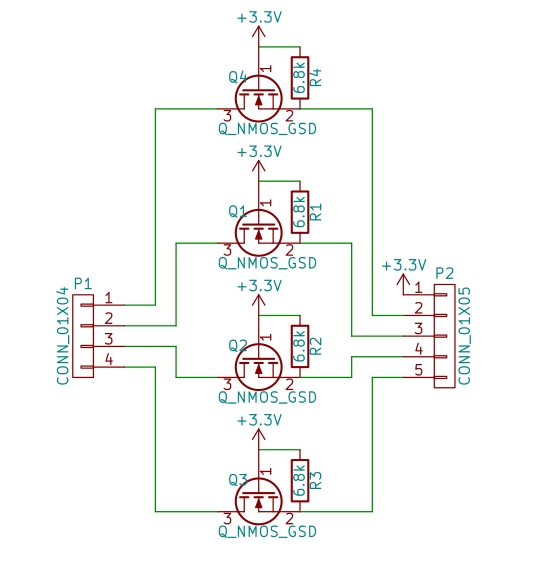

<!doctype html>
<html lang="en">

  <head>
    <meta charset="utf-8">

    <title>Hackathon Arduino 2015 - Politecnico Open unix Labs</title>

    <meta name="description" content="Hackathon Arduino 2015">
    <meta name="author" content="Nicola Corna">
    <meta name="author" content="Fabrizio Ferrai">
    <meta name="author" content="Edoardo Negri">

    <meta name="apple-mobile-web-app-capable" content="yes" />
    <meta name="apple-mobile-web-app-status-bar-style" content="black-translucent" />

    <meta name="viewport" content="width=device-width, initial-scale=1.0, maximum-scale=1.0, user-scalable=no, minimal-ui">

    <link rel="stylesheet" href="reveal.js/css/reveal.css">
    <link rel="stylesheet" href="reveal.js/css/theme/night.css" id="theme">
    <link href='https://fonts.googleapis.com/css?family=Montserrat' rel='stylesheet' type='text/css'>

    <!-- Printing and PDF exports -->
    <script>
      var link = document.createElement( 'link' );
      link.rel = 'stylesheet';
      link.type = 'text/css';
      link.href = window.location.search.match( /print-pdf/gi ) ? 'reveal.js/css/print/pdf.css' : 'reveal.js/css/print/paper.css';
      document.getElementsByTagName( 'head' )[0].appendChild( link );
    </script>

    <!--[if lt IE 9]>
    <script src="reveal.js/lib/js/html5shiv.js"></script>
    <![endif]-->

    <!-- For syntax highlighting -->
	<link rel="stylesheet" href="reveal.js/highlight.js/src/styles/solarized-light.css" id="highlight-theme">
  </head>

  <style type="text/css">
  .reveal pre code {
    color: #3f3f3f;
    background: #eee none repeat scroll 0% 0%;
    font-size: 0.75em;
    line-height: 1.4em;
    border-radius: .2em;
  }
  </style>

  <body>
    <div class="reveal">
      <!-- Any section element inside of this container is displayed as a slide -->
      <div class="slides">
        <!-- Slides are separated by newline + three dashes + newline, vertical slides identical but two dashes -->
			<section data-markdown data-separator="^\n---\n$"
			         data-separator-vertical="^\n--\n$">
				<script type="text/template">


<!-- .slide: data-background="#fdfddf" -->

FIXME IMAGE


---

<!-- .slide: data-background="#333333" -->

<div style="float:left; width:33%">


<h4><b> Fabrizio Ferrai</b></h4>
<h4> [fabrizio@ferrai.io](mailto:fabrizio@ferrai.io) </h4>
<h4> [github.com/ff-](https://github.com/ff-)</h4>
<h4> [@fabferrai](https://twitter.com/fabferrai) </h4>
<h4> [ferrai.io](http://ferrai.io) </h4>
</div>

<div style="float:left; width:34%">


<h4><b> Nicola Corna</b></h4>
<h4> [nicola@corna.info](mailto:nicola@corna.info) </h4>
<h4> [github.com/corna](https://github.com/corna)</h4>
</div>

<div style="float:left; width:33%">


<h4><b> Edoardo Negri</b></h4>
<h4> [edne@gmx.com](mailto:edne@gmx.com) </h4>
<h4> [github.com/edne](https://github.com/edne)</h4>
<h4> [SITO DI EDOARDO FIXME](http://izzo.ovh) </h4>
</div>

---

## [dove le hostiamo? FIXME](https://slides.ferrai.io/3d-printing/)

---

# Index FIXME

- Why 3D Printing
- What
- Some history
- Open Source Printing: Hardware
- How to build one
- Materials
- Open Source Printing: Software
- Model 2 Object
- Control Software
- Finding Models on The Internet
- Some 3D Editors

---

# Materiale

--

## ESP8266 (ESP-12)
Il "core" del nostro sistema



--

## CH340G
Convertitore USB-seriale

FIXME IMMAGINE


--

## GY-652 (BMP180 + HMC5883L)
Pressione atmosferica + campo magnetico



--

## DMARD03
Accelerazione



--

## DHT22
Umidità e temperatura



--

## DS18B20
Temperatura



--

## Buzzer
Per generare suoni (fastidiosi)



--

## Adattatore di livelli logici
Verrà spiegato meglio in seguito

IMMAGINE

--

## LED



--

## Fotoresistenze
Per misurare l'intensità luminosa



--

## Materiale elettronico misto
Resistenze, potenziometri, pulsanti, breadboard...



--

## E la board Arduino?

--

### Non c'è nessuna board Arduino!

<!-- .slide: data-background="img/evil-laugh.gif" -->

--

## Ma io mi sono iscritto ad un hackathon Arduino...
FIXME TESTO NERO

<!-- .slide: data-background="img/crying.jpg" -->

--

### Ok ok, forse non vi abbiamo mentito...

### Non utilizzerete l'hardware Arduino, ma programmerete comunque con Arduino

--

<!-- .slide: data-background="img/wat.jpg" -->

--

## Arduino Board Manager
A partire da Arduino 1.6.4 Arduino supporta l'installazione
di board aggiuntive direttamente dall'IDE Arduino.
Inoltre Arduino è stato reso compatibile con l'ESP8266.

--

<!-- .slide: data-background="img/wat2.jpg" -->

--

## Cosa devo fare???
 - Scarica e installa Arduino 1.6.5 (non usare l'1.6.6!) <!-- .element: class="fragment" -->
 - Lancialo e vai in File → Impostazione → Additional Boards Manager URLs <!-- .element: class="fragment" -->
 - Aggiungi <!-- .element: class="fragment" --> nel campo a lato il seguente URL: [http://arduino.esp8266.com/stable/package_esp8266com_index.json](http://arduino.esp8266.com/stable/package_esp8266com_index.json)
 - Vai in Strumenti → Scheda → Boards Manager <!-- .element: class="fragment" -->
 - Seleziona <!-- .element: class="fragment" --> "**esp8266** by **ESP8266 Community**" e clicca su Install
 - Ora Arduino funziona sul modulo ESP8266 <!-- .element: class="fragment" -->

--

<!-- .slide: data-background="img/doge_esp8266.jpg" -->

--

## Perchè non la board ufficiale Arduino + shield wifi?
 - Costo <!-- .element: class="fragment" -->
 - Dimensioni <!-- .element: class="fragment" -->
 - Costo <!-- .element: class="fragment" -->
 - Performance <!-- .element: class="fragment" -->

---

## ESP8266 (ESP-12)


--

## Features

 - 32-bit RISC CPU @ 80 MHz / 160 MHz <!-- .element: class="fragment" -->
 - 4 MB di memoria FLASH <!-- .element: class="fragment" -->
 - Wi-Fi IEEE 802.11 b/g/n integrato <!-- .element: class="fragment" -->
 - UART (Serial) <!-- .element: class="fragment" -->
 - 7 GPIO (digitalWrite, digitalRead) <!-- .element: class="fragment" -->
 - ADC 10 bit (analogRead) <!-- .element: class="fragment" -->
 - FCC and CE approved <!-- .element: class="fragment" -->
 - 3.3 V <!-- .element: class="fragment" -->
 - Software I2C e SPI <!-- .element: class="fragment" -->

--

## Come si programma

L'ESP8266 si programma con la seriale.

Per collegarlo basta connettere
 - TX ↔ RX
 - RX ↔ TX
 - GPIO0 (ESP8266) ↔ DTS (programmatore)
 - REST (ESP8266) ↔ RTS (programmatore)

--

## Bug

Con Linux il convertitore USB-seriale ha un bug sulla linea RTS.

Una parziale soluzione è la seguente:
 - TX ↔ RX
 - RX ↔ TX
 - GPIO0 (ESP8266) ↔ GND
 - REST (ESP8266) ↔ NON CONNESSO
 
In questo modo all'accensione l'ESP entra automaticamente in modalità "programmazione" e, una volta programmato, lancia il programma.

Se volete invece che all'avvio l'ESP lanci in automatico il programma, connettete il pin GPIO0 a 3.3V.

--

# WARNING!

#### L'ESP8266 e tutti i sensori funzionano a 3.3 V, mentre il convertitore USB-seriale funziona a 5 V.

####Fortunatamente nel modulo ESP-12 è integrato un convertitore 5 V → 3.3 V, quindi possiamo collegare direttamente il VCC del programmatore con il VCC dell'ESP.

### **Non collegate il VCC (5 V) del convertitore a nient'altro!!!**

<!-- .slide: data-background="#B00000" -->

--

# WARNING!

#### Anche le linee dati (RX, TX, DTS e RTS) della seriale sono a 5 V, e collegandole direttamente si rischierebbe di danneggiare l'ESP8266.

### **Utilizzate l'adattatore di livelli logici tra l'ESP8266 e la seriale!!!**

<!-- .slide: data-background="#B00000" -->

--

#### A questo punto l'ESP è connesso al PC, andiamo ora nell'IDE Arduino e, nella tab _Strumenti_ selezioniamo i seguenti parametri:
 - Scheda: "Generic ESP8266 Module"
 - Flash Mode: "QIO"
 - Flash Frequency: "80 MHz"
 - Upload Using: "Serial"
 - CPU Frequency "160 MHz"
 - Flash Size: "4M (1M SPIFFS)"
 - Reset Method: "ck"
 - Upload Speed: "115200"
 - Porta: dipende dal sistema operativo, generalmente "COM1" su Windows e "/dev/ttyUSB0" su Linux

Ora basta cliccare il pulsante "Carica" per compilare lo sketch e caricarlo sull'ESP.

---

## Adattatore di livelli logici

#### Nel kit che riceverete è incluso un adattatore di livelli logici bidirezionale che converte 4 linee a 5 V in altrettante 4 linee a 3.3 V.

IMMAGINE

--

#### Per i più esperti, questo è lo schema:



--

#### Mentre questo è il pinout:

IMMAGINE PINOUT

--

#### Potete quindi collegare l'ESP8266 al convertitore USB-seriale in questo modo:

IMMAGINE CONNESSIONI

---

## BMP180 e HMC5883L


--

#### Entrambi questi sensori sono connessi tramite I<sup>2</sup>C, per cui basta connettere
 - 3V3 a 3.3 V (**NON all'uscita del convertitore USB-seriale**)
 - GND a GND
 - SDA all'SDA dell'ESP8266 (pin 4)
 - SCL all'SCL dell'ESP8266 (pin 5)

--

#### Grazie alle librerie della Adafruit è molto semplice ottenere dati da questi sensori.
#### Andiamo quindi in Sketch → Include Library → Manage Libraries e installiamo le librerie
 - **Adafruit Unified Sensor** by **Adafruit**
 - **Adafruit BMP085 Unified** by **Adafruit**
 - **Adafruit HMC5883 Unified** by **Adafruit**

--

## BMP180 setup()

```
#include <Wire.h>
#include <Adafruit_Sensor.h>
#include <Adafruit_BMP085_U.h>
   
Adafruit_BMP085_Unified bmp = Adafruit_BMP085_Unified(10085);
float temperature;

void setup(void) 
{
	Serial.begin(115200);

	/* Initialise the sensor */
	if(!bmp.begin())
	{
		Serial.print("No BMP085 detected!");
		while(1);
	}
}
```

<!-- .slide: data-background="img/code.jpg" -->

--

## BMP180 loop()

```
void loop(void) 
{
	/* Get a new sensor event */ 
	sensors_event_t event;
	bmp.getEvent(&event);
 
	/* Display the results */
	if (event.pressure)
	{
		Serial.print("Pressure: ");
		Serial.print(event.pressure);
		Serial.println(" hPa");
		bmp.getTemperature(&temperature);
		Serial.print("Temperature: ");
		Serial.print(temperature);
		Serial.println(" C");
	}
	else
		Serial.println("Sensor error");

	delay(1000);
}
```

<!-- .slide: data-background="img/code.jpg" -->

--

## HMC5883L setup()

```
#include <Wire.h>
#include <Adafruit_Sensor.h>
#include <Adafruit_HMC5883_U.h>

Adafruit_HMC5883_Unified mag = Adafruit_HMC5883_Unified(12345);

void setup(void) 
{
	Serial.begin(115200);
  
	/* Initialise the sensor */
	if(!mag.begin())
	{
		Serial.println("No HMC5883 detected!");
		while(1);
	}
}
```

<!-- .slide: data-background="img/code.jpg" -->

--

## HMC5883L loop()

```
void loop(void)
{
	/* Get a new sensor event */ 
	sensors_event_t event; 
	mag.getEvent(&event);
 
	/* Display the results (values are in micro-Tesla (uT)) */
	Serial.print("X: ");
	Serial.print(event.magnetic.x);
	Serial.print(" # Y: ");
	Serial.print(event.magnetic.y);
	Serial.print(" # Z: ");
	Serial.println(event.magnetic.z);

	// Hold the module so that Z is pointing 'up' and you can measure the heading with x and y
	float heading = atan2(event.magnetic.y, event.magnetic.x);

	Serial.print("Heading (degrees): ");
	Serial.println(heading * 180 / M_PI);

	delay(1000);
}
```

<!-- .slide: data-background="img/code.jpg" -->

--

#### Potete anche migliorare la precisione della vostra bussola elettronica applicando la correzione relativa alla [declinazione magnetica](https://en.wikipedia.org/wiki/Magnetic_declination).

#### A Milano la declinazione magnetica nel 2015 è **2.25° E**.

--

<!-- .slide: data-background-video="img/sparrow.mp4,img/sparrow.webm" -->

---

## DHT22


--

#### Collegate:
 - `+` a 3.3 V
 - `-` a GND
 - out a un qualunque pin dell'ESP8266 (nel codice d'esempio, GPIO2)

--

#### Anche con il DHT22 è presente una libreria Adafruit; andiamo di nuovo in Sketch → Include Library → Manage Libraries e installiamo la libreria
 - **Adafruit DHT Unified** by **Adafruit**

--

## setup()

```
#include <Adafruit_Sensor.h>
#include <DHT.h>
#include <DHT_U.h>

DHT_Unified dht(2, DHT22);

void setup() {
	Serial.begin(115200); 
	dht.begin();
}
```

<!-- .slide: data-background="img/code.jpg" -->

--

## loop()

```
void loop() {
	sensors_event_t event;

	dht.temperature().getEvent(&event);
	if (!isnan(event.temperature)) {
		Serial.print("Temperature: ");
		Serial.print(event.temperature);
		Serial.println(" C");
	}
	else
		Serial.println("Error reading temperature!");

	dht.humidity().getEvent(&event);
	if (!isnan(event.relative_humidity)) {
		Serial.print("Humidity: ");
		Serial.print(event.relative_humidity);
		Serial.println("%");
	}
	else
		Serial.println("Error reading humidity!");
	
	delay(2000);
}
```

<!-- .slide: data-background="img/code.jpg" -->

---

## DS18B20


--

#### Il DS18B20 utilizza la stessa interfaccia del DHT22 (OneWire), e si collega all'ESP8266 allo stesso modo:
 - Cavo rosso a 3.3 V
 - Cavo nero a GND
 - Cavo giallo ad un pin qualunque (nel codice d'esempio, GPIO16)

--

#### Scarichiamo poi (come al solito da Sketch → Include Library → Manage Libraries) la seguente libreria:
 - **DallasTemperature** by **Miles Burton, Tim Newsome, Guil Barros, Rob Tillaart**

--

## setup()

```
#include <OneWire.h>
#include <DallasTemperature.h>

OneWire oneWire(16);
DallasTemperature sensors(&oneWire);

void setup(void)
{
	Serial.begin(115200);
	sensors.begin();
}
```

<!-- .slide: data-background="img/code.jpg" -->

--

## loop()

```
void loop(void)
{
	Serial.print("Requesting temperatures... ");
	sensors.requestTemperatures();
	Serial.println("DONE");

	Serial.print("Temperature is: ");
	Serial.print(sensors.getTempCByIndex(0));
	Serial.println(" C");

	delay(500);
}
```

<!-- .slide: data-background="img/code.jpg" -->

---

## DMARD03


--

#### Anche sul DMARD03 è disponibile l'interfaccia I<sup>2</sup>C, per cui connettete:
 - +3 a 3.3 V
 - GND a GND
 - DI all'SDA dell'ESP8266 (pin 4)
 - SCL all'SCL dell'ESP8266 (pin 5)
 - CS a GND

--

Purtroppo per il DMARD03 non è disponibile alcuna libreria Arduino di qualità accettabile.

Fortunatamente è abbastanza semplice leggere i dati dal DMARD03, quindi potete ottenere i valori di accelerazione direttamente tramite la libreria Wire.

A tal proposito [qui](http://mccoycomponents.com/download-PDF/DMARD03%20Datasheet%20V2.3.pdf) è disponibile il datasheet del modulo.

Collegando i pin come descritto nella slide precedente, il DMARD03 assumerà l'indirizzo 7-bit **0x1D**.

---

## Buzzer


--

#### Il buzzer va collegato in questo modo:
 - `+` a 3.3 V
 - `-` a GND
 - out a un qualunque pin dell'ESP8266 (nel codice d'esempio, GPIO12)

--

## Codice

```
#include <Ticker.h>

Ticker buzzer;

void toggleBuzzer()
{
	digitalWrite(12, !digitalRead(12));
}

void setup()
{
	pinMode(12, OUTPUT);
  
	buzzer.attach_ms(5, toggleBuzzer);
}

void loop()
{

}
```

<!-- .slide: data-background="img/code.jpg" -->

--

# WARNING!

#### La libreria *Tone* **non** funziona con ESP8266, se volete generare toni fatelo a mano con la libreria *Ticker*.

<!-- .slide: data-background="#B00000" -->

---

## LED, fotoresistenze, potenziometri, bottoni...

--

# [Google!](http://lmgtfy.com/?q=arduino+potenziometro)

--

#### Inoltre potete trovare altre informazioni relative all'ESP8266 [sulla pagina GitHub di Arduino ESP8266](https://github.com/esp8266/Arduino) e [sulla documentazione ufficiale](http://esp8266.github.io/Arduino/versions/2.0.0/).

--

# WARNING!

#### Per leggere una tensione analogica sul pin "ADC" basta usare *analogRead(A0)* (come in Arduino).

#### L'ADC accetta però valori tra 0 V e 1 V; fate quindi in modo di non superare 1 V.

<!-- .slide: data-background="#B00000" -->

---

## Wi-Fi

--

MISSING FIXME

---

# PARTE DI EDOARDO FIXME

---

# Thank you!


These slides are licensed under Creative Commons<br>
Attribution-ShareAlike 3.0 Unported

## [POUL.ORG](https://www.poul.org)


          </script>
        </section>
      </div>

    </div>

    <script src="reveal.js/lib/js/head.min.js"></script>
    <script src="reveal.js/js/reveal.js"></script>

    <script>

    // Full list of configuration options available at:
    // https://github.com/hakimel/reveal.js#configuration
    Reveal.initialize({
      controls: true,
      progress: true,
      history: true,
      center: true,

      transition: 'slide', // none/fade/slide/convex/concave/zoom

      // Optional reveal.js plugins
      dependencies: [
        { src: 'reveal.js/lib/js/classList.js', condition: function() { return !document.body.classList; } },
        { src: 'reveal.js/plugin/markdown/marked.js', condition: function() { return !!document.querySelector( '[data-markdown]' ); } },
        { src: 'reveal.js/plugin/markdown/markdown.js', condition: function() { return !!document.querySelector( '[data-markdown]' ); } },
        { src: 'reveal.js/plugin/highlight/highlight.js', async: true, callback: function() { hljs.initHighlightingOnLoad(); } },
        { src: 'reveal.js/plugin/zoom-js/zoom.js', async: true },
        { src: 'reveal.js/plugin/notes/notes.js', async: true }
      ]
    });

  </script>

  </body>
</html>
